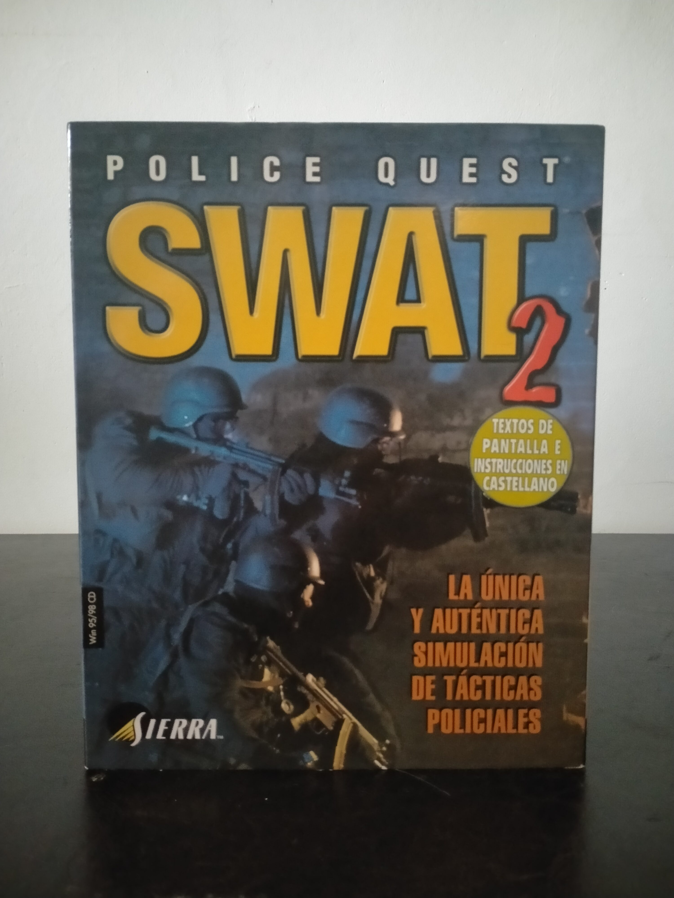

Ficha #000000
Police Quest: SWAT 2
Police Quest: SWAT 2 es una entrega de 1998 dentro de la saga Police Quest y de la subserie SWAT de Sierra, desarrollada por Yosemite Entertainment. A diferencia del primer Police Quest: SWAT, mucho más apoyado en vídeo, formación policial y escenas FMV, esta segunda parte adopta una estructura táctica en tiempo real con perspectiva isométrica, gestión de unidades, planificación de intervenciones, rescate de rehenes, uso de especialistas y toma de decisiones bajo presión. Su planteamiento permite jugar desde el lado del equipo SWAT del LAPD o desde la organización terrorista, lo que le da un enfoque poco habitual dentro de la saga y lo aproxima más a la estrategia táctica de escuadrón que a la aventura policial clásica. Esta edición española en Big Box para Windows 95/98 conserva el posicionamiento comercial de Sierra FX, con textos de pantalla e instrucciones en castellano, y representa una etapa muy concreta del PC de finales de los noventa: CD-ROM, estrategia táctica, manual físico, localización española y una fuerte apuesta por presentar la simulación policial como producto serio, documentado y orientado al realismo.
- Formato
- Big Box
- Plataforma
- Win95 Win98
- Género
- Estrategia en tiempo real Simulación
- Serie
- Todos Bigbox
- Desarrollador
- Yosemite Entertainment
- Distribuidor
- Sierra FX / Coktel Educative Multimedia, S.L.
- EAN
- 3348542041653
Contenido de la edición
- CD-ROM
- manual
- guía básica de supervivencia
- tarjeta de registro Sierra Number 1 Club
- caja Jewel Case
Preservación
- Protección
- Verificación de CD
- Formato recomendado
- BIN/CUE
- Jugable en virtualización
- Sí
Preservación recomendada mediante imagen completa del CD-ROM, preferentemente en formato BIN/CUE para conservar la estructura del soporte físico y facilitar su documentación archivística. La ejecución virtual es viable montando la imagen de disco en un entorno Windows 95/98 compatible.